순서 통계량(order statistics)
원소 n개를 가지며 오름차순으로 정렬된 집합의 i번째 요소. 예를 들면, 집합의 최소값(minimum)은 첫번째 순서 통계량이고, 최대값(maximum)은 i=n일 때 n번째 순서 통계량이다.
중앙값(median)
집합의 가운데 지점. n이 홀수이면 중앙값은 하나이고 i = (n+1)/2이다. n이 짝수이면 중앙값은 두 개가 나온다. 하나는 i = ⌊(n+1)/2⌋ 낮은 중앙값(lower median), 다른 하나는 i = ⌈(n+1)/2⌉ 높은 중앙값(upper median)이다.
가정
- 중앙값은 낮은 중앙값을 가르킨다.
- 집합은 모든 원소가 각기 다른 값을 가진다.
선택 문제(selection problem)
입력: 구별된 n개의 숫자로 이루어진 집합 A와 i번 정수. (1 ≤ i ≤ n)
출력: A의 i-1개의 요소들보다 큰 요소 x ∈ A.
선택 문제는 병합 정렬 또는 힙 정렬을 사용해 O(n lg n)시간에 정렬이 가능하다.
9.1 Minimum and maximum
n-1번 비교를 통해 최대값과 최소값을 찾을 수 있다.
MINIMUM(A)
1 min = A[1]
2 for i=2 to A.length
3 if min > A[i]
4 min = A[i]
5 return min
Simultaneous minimum and maximum
최대/최소값을 모두 찾으려면 2(n-1)번 비교를 해야 한다. 그러나 최대 3⌊n/2⌋ 비교를 통해 찾을 수 있는 방법이 있다. 모든 요소를 쌍짓고 서로 비교 후 작은 값을 최소값과 비교, 큰 값을 최대값과 비교하는 것이다. 모든 2개의 요소마다 3번 비교를 하면 된다. n이 홀수이면 첫번째 값을 최대/최소값으로 정한 뒤 비교하면 된다. n이 짝수이면 첫번째와 두번째 요소들을 서로 비교하고 나온 작은 값과 큰 값을 최대/최소값으로 정한다.
n이 홀수이면 비교를 3⌊n/2⌋번 한다. n이 짝수이면 처음 1번 비교를 한 후 3(n-2)/2비교를 한다. 두 경우를 모두 더하면 비교횟수는 총 3⌊n/2⌋번이다.
9.2 Selection in expected linear time
RANDOMIZED-SELECT(A,p,r,i)
1 if p == r
2 return A[p]
3 q = RANDOMIZED-PARTITION(A,p,r)
4 k = q-p+1
5 if i == k
6 return A[q]
7 elseif i < k
8 return RANDOMIZED-SELECT(A,p,q-1,i)
9 else return RANDOMIZED-SELECT(A,q+1,r,i-k)
RANDOMIZED-PARTITION(A,p,r)
1 i = RANDOM(p,r)
2 exchange A[r] with A[i]
3 return PARTITION(A,p,r)
PARTITION(A,p,r)
1 x = A[r]
2 i = p-1
3 for j = p to r-1
4 if A[j] ≤ x
5 i = i+1
6 exchange A[i] with A[j]
7 exchange A[i+1] with A[r]
8 return i+1
PARTITION 실행시간: Θ(n)
RANDOMIZED-SELECT의 최악인 경우 실행시간: Θ(n2)
⇒ 분할시 항상 가장 큰 요소를 남길 때
RANDOMIZED-SELECT 예상 실행시간 분석
n개 요소를 가진 입력 배열 A[p..r]에서의 실행시간을 임의 변수인 T(n)이라고 한다. 그러면 E[T(n)]에서 상계를 얻는다.
k = 1,2,...,n일 때, 지표 확률 변수 Xk를 다음과 같이 정의한다.
Xk = I{the subarray A[p..q] has exactly k elements}
모든 요소가 개별적이라고 가정하면,
(9.1) E[Xk] = 1/n
상계를 정하기 위해, 분할시 항상 더 많은 요소를 가진 쪽에 i번째 요소가 존재한다고 가정한다. RANDOMIZED-SELECT 호출시, 확률 지표 변수 Xk는 k값으로 정해진 하나의 값에 대해 1을 가지고 나머지 모든 값에는 0을 가진다. Xk = 1일 때, 두 개의 부분 배열은 k-1과 n-k 크기를 가진다.
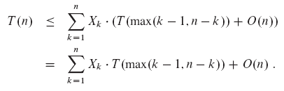
기대값을 양쪽에 취하면 다음 식이 나온다.
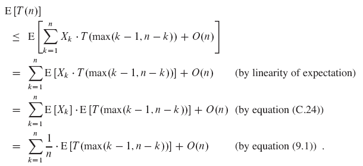
(C.24) E[X1X2…Xn] = E[X1]E[X2]…E[Xn]
T(max(k-1,n-k))을 분석해보자.
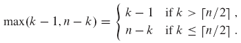
n이 짝수이면, 합에서 T(⌈n/2⌉)부터 T(n-1)까지 나오는 각 항은 정확히 두 번씩 나타난다. n이 홀수이면, 각 항이 두 번씩 나오다가 마지막에 T(⌊n/2⌋)이 추가로 한 번 나타난다. 따라서 다음 식을 갖는다.
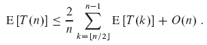
치환법으로 E[T(n)] = O(n)임을 증명한다.
가정
- E[T(n)] ≤ cn
- T(n) = O(1)
- O(n) = an
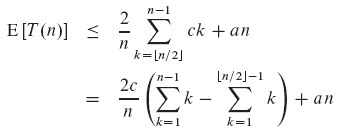
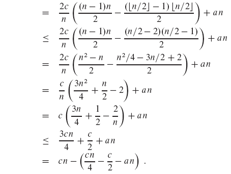
충분히 큰 n에 대해 마지막 표현식은 최대 cn임을 보여야한다. 즉, cn/4 - c/2 - an ≥ 0임을 보여야 한다. 이 식을 정리하면 다음 식이 나온다.
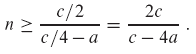
따라서 n < 2c/(c-4a)에 대해 T(n) = O(1)이라고 가정하면, E[T(n)] = O(n)이 나온다.
따라서 선형 시간에 순서 통계량을 찾을 수 있다.
9.3 Selection in worst-case linear time
SELECT 알고리즘은 RANDOMIZED-SELECT와 같이 입력 배열을 재귀적으로 분할하여 지정된 요소를 찾는다. 다른 점은 배열이 좋게 분할되는 것을 보장한다는 점이다.
실행 방식: n>1인 크기를 가진 입력 배열의 가장 작은 i번 요소를 결정한다.
SELECT 알고리즘 실행 단계
- 입력 배열의 n개 요소를 ⌊n/5⌋ 집단으로 나눈다. n/5의 나머지가 있을 경우 (n mod 5)개로 구성된 집단을 추가한다.
- ⌈n/5⌉ 집단의 요소를 각각 삽입 정렬한 후, 집단의 요소로 만들어진 각각의 정렬된 목록으로부터 중앙값을 찾는다.
- 2단계에서 찾은 ⌈n/5⌉개 중앙값들의 중앙값 x를 찾기 위해 SELECT를 재귀적으로 사용한다. (중앙값의 개수가 짝수이면 약속에 따라 x는 낮은 중앙값이다.)
- PARTITION의 수정된 버전을 사용해 중앙값 x 근처에 있는 입력 배열을 분할한다.
- i = k 이면, x를 반환한다. i < k 이면, 낮은 쪽에 있는 가장 작은 i번 요소를 찾기 위해 재귀적으로 SELECT를 사용한다. i > k 이면, 가장 작은 (i-k)번 요소를 찾기 위해 재귀적으로 SELECT를 사용한다.
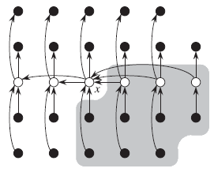
그림 9.1 SELECT 알고리즘 분석. 각 요소는 작은 원으로 표시되고, 5개 요소로 구성된 각 집단은 하나의 열로 이루어진다. 집단의 중앙값은 흰색으로 칠해지고, x는 따로 표시되어있다. 화살은 큰 요소에서 작은 요소로 향해 간다. x의 오른쪽에 있는 각 그룹의 요소 3개는 x보다 크고, x의 왼쪽에 있는 각 그룹의 요소 3개는 x보다 작다. x보다 큰 요소는 그림에서 회색 배경으로 나타나 있다.
n이 5로 나눠지지 않으면 5개 요소보다 적은 개수를 가진 한 집단이 있다는 것을 제외하고 x가 속한 집단을 제외하면, ⌈n/5⌉ 집단의 반 이상은 x보다 큰 요소를 적어도 3개 가지고 있다. 두 집단을 제외하면 x보다 큰 요소의 수를 구하는 식을 세울 수 있다.
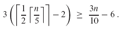
x보다 작은 요소 수를 구하는 식도 위와 비슷하므로, 최악인 경우에 5단계는 재귀적으로 SELECT를 최대 7n/10 + 6 요소에 대해 호출한다.
SELECT 알고리즘의 최악인 경우 실행시간 T(n)
1,2,4 단계는 O(n)시간이 걸린다. (2단계에서 크기 O(1)인 집합에 대한 삽입 정렬 시간은 O(n)이다.) T가 단조롭게 증가한다고 가정하면, 3단계는 T(⌈n/5⌉) 시간이 걸리고, 5단계는 최대 T(7n/10 + 6)시간이 걸린다.
가정
- 입력 요소가 140개 미만이면 O(1)시간이 걸린다.
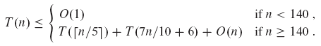
가정
- 충분히 큰 상수 c
- 상수 a (n > 0)
n < 140일 때, c가 충분히 크므로 T(n) ≤ cn은 성립한다.
n ≥ 140일 때, 치환법을 사용하면 다음 식이 나온다.
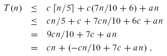
위 식은 다음 식을 만족하면 최대 cn이다.
(9.2) -cn/10 + 7c + an ≤ 0
n > 70일 때, 부등식 (9.2)는 c ≥ 10a(n/(n-70))과 동치이다. n ≥ 140이라고 가정했기 때문에, n/(n-70) ≤ 2이고 c ≥ 20a는 부등식 (9.2)를 만족한다. 따라서 SELECT의 최악인 경우 실행시간은 선형적이다.
결론: 정렬과 색인(indexing)으로 선택 문제를 푸는 것은 점근적으로 비효율적이다. (8장의 비교정렬은 Ω(n lg n)시간이 걸리므로)